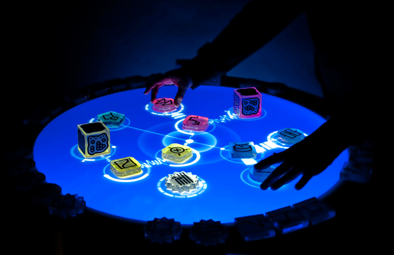

El diseño asistido por computadoras (diseño asistido por ordenador en España), más conocido por sus siglas inglesas CAD (computer-aided design), es el uso de un amplio rango de herramientas computacionales que asisten a ingenieros, arquitectos y diseñadores. El CAD es también utilizado en el marco de procesos de administración del ciclo de vida de productos.
También se puede llegar a encontrar denotado con las siglas CADD (computer-aided design and drafting), que significan «bosquejo y diseño asistido por computadora».
Estas herramientas se pueden dividir básicamente en programas de dibujo 2D y de modelado 3D. Las herramientas de dibujo en 2D se basan en entidades geométricas vectoriales como puntos, líneas, arcos y polígonos, con las que se puede operar a través de una interfaz gráfica. Los modeladores en 3D añaden superficies y sólidos.
CAD fue principalmente inventado por un francès, Pierre Bézier, ingeniero de los Arts et Métiers ParisTech. El ingeniero desarrolló los principios fundamentales de la CAD con su programa UNISURF en 1966.
El usuario puede asociar a cada entidad una serie de propiedades como color, capa, estilo de línea, nombre, definición geométrica, material, etc., que permiten manejar la información de forma lógica. Además se pueden renderizarA través de diferentes motores o softwares como V-Ray, Maxwell Render, Lumion, Flamingo, entre los que son pagos, hay algunos de licencia free and open source como por ejemplo el Kerkythea y Aqsis, entre los más usados, son modeladores 3D para obtener una previsualización realista del producto, aunque a menudo se prefiere exportar los modelos a programas especializados en visualización y animación, como Autodesk Maya, Bentley MicroStation, Softimage XSI o Cinema 4D y la alternativa libre y gratuita Blender, capaz de modelar, animar y realizar videojuegos.
https://dialnet.unirioja.es/servlet/libro?codigo=220813
Lenguaje De Maquina
El lenguaje de máquina o código máquina es el sistema de códigos directamente interpretable por un circuito microprogramable, como el microprocesador de una computadora o el microcontrolador de un autómata. Este lenguaje está compuesto por un conjunto de instrucciones que determinan acciones a ser tomadas por la máquina. Un programa consiste en una cadena de estas instrucciones más un conjunto de datos sobre el cual se trabaja. Estas instrucciones son normalmente ejecutadas en secuencia, con eventuales cambios de flujo causados por el propio programa o eventos externos. El lenguaje de máquina es específico de la arquitectura de la máquina, aunque el conjunto de instrucciones disponibles pueda ser similar entre arquitecturas distintas.
Los circuitos microprogramables son digitales, lo que significa que trabajan con dos únicos niveles de tensión. Dichos niveles, por abstracción, se simbolizan con los números 0 y 1, por eso el lenguaje de máquina sólo utiliza dichos signos. Esto permite el empleo de las teorías del álgebra booleana y del sistema binario en el diseño de este tipo de circuitos y en su programación
Descarga Prgrama C++
Descarga Prgrama java
Ciclos De Programa
Un sistema de información es un sistema, automatizado o manual, que engloba a personas,
máquinas y/o métodos organizados para recopilar, procesar, transmitir datos que representan
información. Un sistema de información engloba la infraestructura, la organización, el
personal y todos los componentes necesarios para la recopilación, procesamiento,
almacenamiento, transmisión, visualización, diseminación y organización de la información.
Control Micro Programador
La unidad de control (UC), en inglés: control unit (CU), es uno de los tres bloques funcionales principales en los que se divide una unidad central de procesamiento (CPU). Los otros dos bloques son la unidad de proceso y la unidad de entrada/salida.
Su función es buscar las instrucciones en la memoria principal, decodificarlas (interpretación) y ejecutarlas, empleando para ello la unidad de proceso.
Existen dos tipos de unidades de control: las cableadas, usadas generalmente en máquinas sencillas, y las microprogramadas, propias de máquinas más complejas. En el primer caso, los componentes principales son el circuito de lógica secuencial, el de control de estado, el de lógica combinacional y el de emisión de reconocimiento de señales de control. En el segundo caso, la microprogramación de la UC se encuentra almacenada en una micromemoria, a la cual se accede de manera secuencial para posteriormente ir ejecutando cada una de las microinstrucciones.

Diseño Del Sistema
En principio, las unidades de motores de tracción sensorizadas SKF pueden incorporarse a los diseños de la misma manera que los rodamientos rígidos de bolas SKF. A continuación, se proporcionan algunas recomendaciones específicas. Para obtener información adicional sobre las aplicaciones de motores eléctricos, consulte el manual Rodamientos de rodillos en generadores y motores eléctricos de SKF.